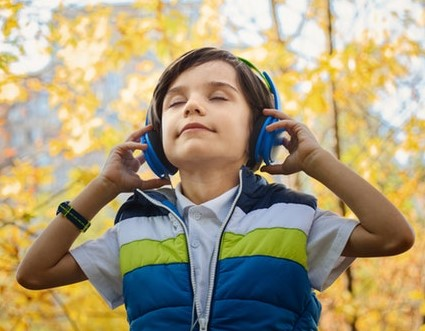

Wee Jammin Music Lessons is a music program that offers a unique curriculum that allows children to explore instruments, create music and jam with their peers.
This program is designed primarily for children with autism and other related disorders; however, it is open to any child who is seeking a nontraditional approach to music.
Hello Parents, Guardians and Educators,
My name is Donnia, I have been living in Oregon since 2013. I moved here with my son to experience all the good things that the beautiful Northwest has to offer. I enjoy doing outdoorsy things like; snowboarding, camping, waterfall hikes and day trips to the coast or rivers. My favorite thing of all is definitely music. I enjoy going to concerts, making the best mixtapes/playlists, and having jam sessions with friends. I plays the drums, ukulele, guitar, keyboard, and I am currently learning the skills to DJ. Music is something that feeds my mind, body and soul.
I have worked in early childhood education for the past 15 years in a plethora of different forms including summer camps, special education, swim lessons, art classes, music lessons and most recently, behavior therapy for children with autism. I earned my bachelor’s degree in Psychology while completing my required hours and coursework to become a BCaBA. I am currently a Registered Behavior Technician and licensed with State of Oregon’s Behavior Analysis Regulatory Board (BARB). I see there is a need for more extra curricular activities for children with special needs. I believe all children deserve a chance at exploring their creative talents, discovering an effective outlet for their emotions/feelings and broadening their skills of communication and socialization through music. Those that learn differently, often need to be taught differently. Music is the universal language!
Wee Jammin Music Lessons provides private music lessons using a variety of instruments for students to play with and different forms of teaching tools to implement in lessons to ensure the child is engaged and getting the most out of their lesson. Small group jams can be arranged for a creative form of inclusion among peers that is fun, rewarding and beneficial. Instruments often used in lessons are drums, keyboard, ukulele and beat machines. Working with kids is a career path that I am passionate about, knowledgeable in and experienced with. I am so thankful to work with the best little humans and teach them all about music.
Thank you,
Donnia Schwarz
- Concentration
- Improving fine/gross motor skills
- Patience
- Listening Skills
- Social Skills
- Improves creative expression
- Increase in language and communication
- Improves memory and cognition
- Reduces stress/anxiety
- Improves reading and mathematical skills
Here are additional resources that explain the benefits of music.
TED-Ed: Music as a Language - Victor Wooten
TED-Ed: How playing an instrument benefits your brain - Anita Collins

The Benefits of Music Education
Music and Autism: The Benefits of Music for Special Needs Children
×"Our autistic son loves music, but we struggled to find classes that were a good fit for him. They were either too basic and focused on music appreciation or too intense of a schedule. Wee Jammin’ music lessons and Donnia are a perfect fit. Donnia plays a variety of instruments and is a wonderful teacher with her years of working with kiddos. She introduced our son to a variety of instruments, and follows his lead and interest to learn songs that he loves. She is teaching him how to read music, tempo, rhythm, etc. This is such a great concept and business, to allow kids that need more supports access to extracurricular activities of their peers. I highly recommend Wee Jammin’ music lessons to anyone with a music loving kiddo that wants to explore that interest and foster a life long skill of playing an instrument."
- Jen
"My 4 yr old takes music lessons here. Her music instructor, Donnia is so amazing. Every Sunday morning my daughter wakes up with a big smile on her face as she knows her favorite teacher Donnia will be teaching her piano. Music is a stress buster for my daughter. I am so grateful to Donnia for being such an amazing teacher to my daughter. Donnia's way of teaching makes it more fun to learn piano for my daughter. I highly recommend it."
-Swati
Music Camp:
Stay tuned for an awesome 5 day music camp, providing 3 hours of fun and exciting
activities to keep the kids busy while on school breaks.
Activities include:
- instrument exploration
- small group jams
- music related art projects
- dancing and games
Music Bus:
Envision a music studio space on a bus that can
arrive at the child’s home, school or wherever is
most convenient. The bus will be designed with your
child in mind. A clean and classy exterior and an
awesome kid friendly music space inside.
The bus
will be exciting, fun, comfortable, and safe for kids.
The bus drives to the planned location and stays parked
during the lesson. The bus will not transport students.